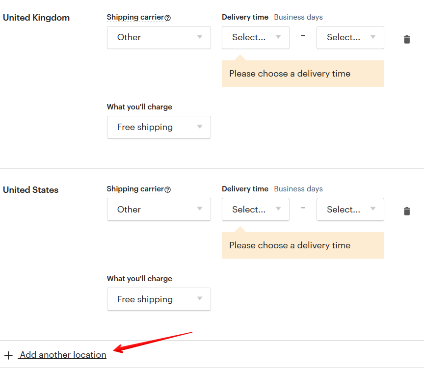

Что будет, если вовремя не отправить заказ
В этом случае покупатель может открыть спор (кейс) на Этси и потребовать воз-
врата денег. Это может негативно сказаться на позициях вашего магазина.
Ещё один вариант – покупатель промолчит, но потом может оставить плохой
отзыв.
Поэтому, если у вас возник форс-мажор и вы по какой-то причине не можете
отправить посылку в нужный срок – свяжитесь с покупателем, объясните ситу-
ацию, спросите, сможет ли он немного подождать.
Если вам не удастся прийти к согласию – просто отмените заказ и верните
оплату. Репутация стоит дороже.
Как изменить дату отправки заказа
Если покупатель согласится увеличить срок подготовки заказа, найдите его в
разделе Orders & Shipping, нажмите кнопку More actions и выберите пункт Update
ship by date.
Укажите в открывшемся окне новую дату отправки и сообщение покупателю.
Изменить дату можно только до указанного Etsy дня (в данном случае, до 14
августа). Новая дата должна быть не позднее, чем 3 недели от первоначальной
даты отправки.

Как долго идёт посылка в США и другие страны
Так как я отправляю свои товары Почтой России, то все цифры приведу из сво-
его опыта.
В среднем, от момента отправки в моём почтовом отделении до выпуска та-
можней России проходит от 3 до 6 дней (все отправления идут через Москву
или Санкт-Петербург). То есть на нашей стороне Почта России работает очень
быстро.
Далее обычно дней через 5-7 посылка прибывает на таможню страны назначе-
ния (но бывает, что и через 1-2 дня). И ещё около недели на то, чтобы дойти до
адресата.
То есть в общем на всё уходит около 14-20 дней. Самая быстрая доставка пока
была в Великобританию и США – в обоих случаях всего 8 дней.
В связи с коронавирусом многие авиарейсы отменены, поэтому заказы могут
идти очень долго, иногда по 2-3 месяца. Летом 2020 года часть посылок Почта
России отправляла морем вместо авиа.
Чем можно отправить посылку, кроме Почты России и EMS
Что касается России, то можно воспользоваться услугами, например, следую-
щих компаний:
• DHL
• CDEK
• FedEx
• UPS
• Spring
• Space-Express
Платят ли покупатели какие-то пошлины и налоги
В разных странах действуют свои ограничения.
США. Посылки из других стран ценностью до 800 долларов проходят без со-
ставления дополнительных бумаг на таможне.
Канада. Не облагаются пошлинами товары до 20 канадских долларов (около 15
долларов США) и подарки до 60 канадских долларов (около 45 долларов США).
Страны Евросоюза. Таможенная пошлина взымается на посылки свыше 150
евро.
Помимо этого, в большинстве стран VAT-налогом не облагаются посылки до 22
евро. Но, например, в Дании эта граница около 10 евро; в Болгарии – 15; а во
Франции абсолютно все посылки облагаются VAT налогом.
У посылок, обозначенных как «подарок», чаще всего стоит беспошлинное огра-
ничение для VAT-налога в 45 евро.
С 1 июля 2020 года беспошлинный ввоз на посылки до 22 евро должен быть
отменён – со всех будут брать VAT. Правила для «подарков» при этом не изме-
нятся.
Великобритания. Таможенный сбор не берётся на товары до 135 фунтов стер-
лингов (180 долларов). VAT-налогом не облагаются подарки до 39 фунтов стер-
лингов (около 50 долларов США). Если стоимость посылки больше 135 фунтов
– с 1 января 2021 года Etsy собирают VAT-налог в момент покупки.
Австралия. Не облагаются налогом товары до 1000 австралийских долларов
(около 750 долларов США).
Сколько товаров можно отправить в посылке
В таможенной декларации CN22 для описи товаров мало места. Но никаких
ограничений по количеству товаров нет. Если вы отправляете много вещей, то
просто пишите мельче – именно такой совет я получила в отделении почты.
Если сделали 2 заказа на 1 адрес – можно ли их отправить
одной посылкой
Можно. Порой бывает, что покупатель купил что-то в магазине. А потом спустя
несколько минут нашёл что-то ещё – и снова оформил заказ.
После отправки посылки укажите трек-номер в обоих заказах.
Стоит ли писать что-то покупателю после отправки товара
Здесь всё на ваше усмотрение. Первое сообщение я пишу в тот момент, когда
отправляю трек-номер и помечаю заказ отправленным. Затем я обычно пишу
покупателю, когда вижу по трек-номеру, что посылка пришла в его страну.
Чтобы он не забывал про свой заказ и про меня :) А также связываюсь, когда
вижу, что появился статус «Неудачная попытка вручения».
Что делать, если посылка пропала в пути
Прежде всего необходимо позвонить в службу поддержки вашей почтовой
службы и попытаться узнать судьбу отправления (здесь вам также поможет
трек-номер заказа).
В некоторых странах (например, Канада и Австралия) мелкие пакеты из Рос-
сии/Украины не отслеживаются.
Возможно, вам потребуется написать заявление на розыск отправления в своей
почтовой компании.
Обязательно напишите покупателю и сообщите ему, что вы пытаетесь выяснить
судьбу его заказа. Самое главное – держать клиента в курсе. Пусть новостей не
будет – но хотя бы вы сами не пропадаете, а ему так будет куда спокойнее.
Если сроки доставки превышают заявленные значения в Policies вашего мага-
зина, то можно предложить покупателю вернуть деньги.
Пропажа посылок – это неизбежная реальность, с которой приходится счи-
таться. Вы только можете застраховывать отправления или закладывать некий
процент на такие потери в цену каждого товара.
Как застраховать отправление
Это можно сделать при отправке заказа в почтовом отделении. Вам необхо-
димо указать ценность отправления.
Например, Почта России от этой суммы возьмёт комиссию 4%. Если вы отправ-
ляете EMS, то сумма страховки составит 1% от ценности посылки.
Страховать можно только посылки.
К сожалению, у меня нет информации о стоимости страховки в других странах.
Покупатель говорит, что не получал товар, хотя по трек-но-
меру видно, что он доставлен
Некоторые продавцы из США утверждают, что такое периодически случается у
их почты USPS. Например, посылку доставили по другому адресу. Тогда они
просят поспрашивать у соседей – не приходила ли им по ошибке посылка. Если
покупатель говорит, что ничего не нашлось, то в таких случаях продавцы чаще
всего доверяют покупателям и возвращают им деньги.
Но я также встречала истории о покупателях, которые систематически «грешат»
подобным поведением, пытаясь обмануть продавца.
В каждом конкретном случае решать только вам – доверять покупателю или же
нет. Невозможно дать единый и универсальный совет в подобной ситуации.
Просто знайте, что такое бывает.
Посылка находится в почтовом отделении покупателя, но он
отказывается её получать и просит вернуть деньги
Если по трек-номеру видно, что посылка находится в почтовом отделении кли-
ента – то это ваше главное доказательство в случае открытия кейса.
Если покупатель так и не заберёт посылку, и она вернётся к вам, то вы можете
вернуть ему стоимость товара за вычетом расходов на доставку.
Посылка не пришла покупателю. Я вернул(а) деньги. После
этого посылка всё-таки пришла, и покупатель хочет вернуть
деньги обратно
Можно поступить следующим образом:
1. Создать на Этси цифровой товар со стоимостью равной цене заказанного то-
вара. И отправить ссылку на него клиенту, чтобы он его оплатил.
2. Выставить счёт на PayPal. О том, как это сделать, читайте вопрос «Как отме-
нить неоплаченный заказ физических или цифровых товаров?»
Покупатель хочет дополнить оплаченный заказ. Как взять с
него доплату
1. Вы можете добавить новый листинг специально для покупателя и указать в
нем стоимость — разницу доплаты. А стоимость доставки поставить 0. В описа-
нии листинга указать, что будет изменено и за что доплачивает покупатель.
2. Отменить данный заказ, вернуть покупателю деньги, добавить новый листинг
с учетом изменений, и попросить покупателя оплатить его снова.
Какие комиссии нужно заплатить с продажи
С каждого проданного товара вы платите Этси 5% комиссии. Например, при
стоимости товара в 20 долларов Etsy получает 1 доллар. Комиссия берётся как
со стоимости товара, так и со стоимости доставки.
Также свои комиссии берёт и платёжная система.
Например, если вы живёте в России и получаете платежи через PayPal, то эта
система автоматически снимает с вас 4.4% + $0.30 с общей стоимости заказа
(товар + доставка). То есть с 20 долларов вы заплатите 1 доллар и 18 центов.
Если вы принимаете оплату через Etsy Payments, то размер комиссий примерно
схож с Пайпалом. Для каждой из стран, где доступен EP, размер комиссии
можно посмотреть на странице
https://help.etsy.com/hc/en-us/articles/115015628847
Помимо этого, если вы живёте в стране Евросоюза и у вас подключен Etsy Pay-
ments, то Этси принудительно будет взымать с вас местный VAT-налог (если у
вас нет зарегистрированного юрлица).
Также 2.5% Этси берёт за конвертацию валют при оплате через Etsy Payments
(если валюта счёта в вашем банке отличается от той, в которой вы продаёте
товары в Etsy магазине).
Продавцы из России и Беларуси также оплачивают НДС 20% от комиссий Etsy
(подробнее об этом читайте в вопросе «Что такое VAT ID в настройках мага-
зина?»).
Учитывайте эти комиссии, когда рассчитываете стоимость товаров.
Если мой цифровой товар купил покупатель из Евросоюза, то
кто платит VAT-налог
Платит покупатель. При выставлении счёта на оплату Etsy автоматически при-
плюсовывает к цене размер VAT-налога, который должен заплатить покупатель.
То есть Etsy сами «собирают налоги», вам не нужно об этом беспокоиться. И на
вашу прибыль никак не повлияет, что товар купил житель Евросоюза.
Будет ли проданный листинг доступен снова для продажи
Если вы хотите, чтобы после продажи товара он снова был доступен в магазине,
то это можно сделать двумя способами.
Способ 1 – выставить количество товаров больше 1

В этом случае после продажи значение этого параметра уменьшится на 1, а то-
вар будет по-прежнему доступен для покупки. Это особенно актуально для циф-
ровых товаров, которые можно продавать постоянно.
Способ 2 – сделать неактивный листинг активным.
Если же количество товаров в данном листинге у вас было «1», то после про-
дажи он перейдёт в категорию Sold Out раздела Listings. Поэтому вам нужно
обновить его, то есть cделать Renew.
В обоих случаях вам нужно заплатить $0.20 после каждой продажи (за «новое»
размещение товара).
Можно ли вместо проданного товара поставить другой в тот
же листинг, заменив фото и описание
Да, вы можете просто отредактировать проданный листинг, заменив описа-
ние/фото/тэги и т.п.
Теоретически это должно положительно сказаться на его судьбе, так как у этого
листинга уже будет положительный «рейтинг» за счёт прошедшей продажи. Но,
возможно, поисковый алгоритм Этси как-то может вычислить (по новым фото
или заголовку), что товар вы всё-таки был изменен. Точно этого никто не знает.
И не забудьте сделать Renew проданного листинга – чтобы он снова появился
в магазине (если у вас была указана 1 шт).
Товар продан оффлайн - как его перенести в раздел продан-
ных
Перенести товар в категорию «продано» (Sold Out) нельзя. Там он может ока-
заться только тогда, когда его купят через Etsy.
Но вы можете сделать следующее:
• изменить листинг этого товара и поставить вместо него другой товар (за-
менив фото и описание) – так вам не придётся платить 20 центов за раз-
мещение нового товара (обратите внимание на раздел 3, вопрос «Если
товар не пользуется спросом, можно ли заменить фотографии, описание
и выставить другой товар?»)
• можно сделать листинг неактивным (Inactive) – только вы будете его ви-
деть
• можно указать, что товар выставлен для примера (Made to Order), и вы мо-
жете сделать его на заказ – конечно, если есть такая возможность.
Как провести на Этси оффлайн продажу
Раньше это можно было сделать с помощью метода оплаты Other.
Но осенью 2020 года Etsy отключили данный способ. Поэтому продажи можно
проводить только через PayPal или Etsy Payments.
Как указать, что я отправляю только в определенные страны
К сожалению, на Etsy нельзя исключить какие-то страны из общего списка –
можно лишь указать те, куда вы отправляете.
Удобнее всего это сделать через Shipping Profiles (Settings – Shipping settings),
чтобы не пришлось это делать всякий раз при создании очередного листинга.

Нужно ли вкладывать инвойс в посылку
Инвойс иначе ещё называют упаковочной квитанцией. Это список заказанных
товаров, распечатанный на специальном бланке.
Его можно распечатать на сайте Etsy.
Почему стоит вложить его в посылку:
• если покупатель заказал несколько товаров, то может сверить, что вы всё
вложили в посылку
• на инвойсе печатается название вашего магазина и ссылка на него
• в инвойс можно автоматически включить код купона со скидкой на сле-
дующую покупку
• можно написать сообщение покупателю (например, как вернуть товар или
инструкцию по использованию)
• его может затребовать таможня страны клиента